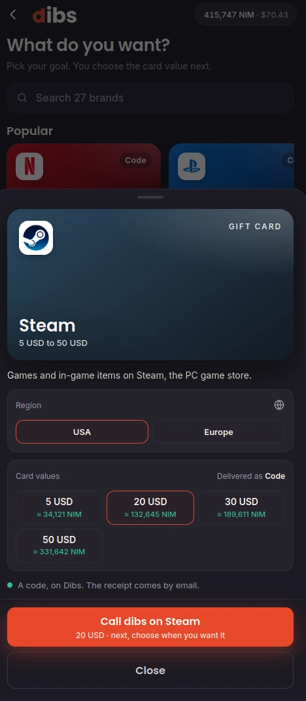
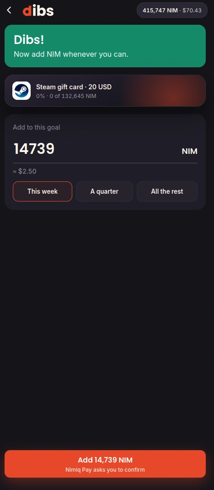
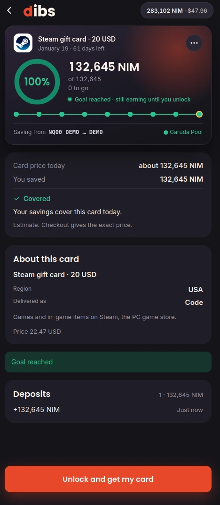
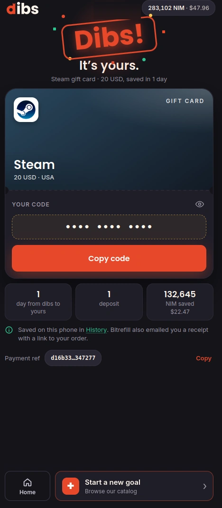

It starts with "I want that."
Dibs was built around a small change in perspective: instead of asking people to save for the sake of saving, start with something they already care about.
We are two siblings building a Nimiq Pay Mini App. The name comes from calling dibs: the moment you point to something and say, "I'm going for that." In Dibs, that decision becomes a goal, a plan and a visible path toward the finish line.
We want cryptocurrency to feel useful in everyday life. Not an abstract balance to watch, but something you can put toward a gift card, a meal, a trip or an experience. Dibs does not issue a token, run a token sale or ask you to hand over your keys.
Claim it. Save for it. Make it yours.
The idea behind Dibs
A balance isn't a reason.
Traditional saving tools often start with a number. Motivation usually starts with a thing.
Money sits behind an abstract total. Progress is easy to postpone or forget.
A real reward, a target and visible steps make every deposit mean something.
Meanwhile, cryptocurrency can be difficult for newcomers to use: wallet concepts, staking, conversion rates and checkout flows create friction. Dibs is designed to bring those pieces together into a single, understandable journey, without hiding what is happening.
Put the purchase first.
Dibs lets you choose a real product, set a savings goal in NIM, and work toward it at your own pace.
Something real
Pick a gift card from the catalog and decide what you're working toward.
Progress you can see
Follow the goal, add NIM whenever you choose and keep track of your momentum.
Ownership throughout
Staking is approved from your Nimiq Pay wallet, under your own address.
Categories include gaming, travel, shopping, streaming and food. Dibs is deliberately not a gaming-only app: the goal is to make saving for everyday wants feel achievable, whatever the category.
From "dibs" to "it's yours."
Four moves, one network-mandated wait. Nothing is deducted automatically from your wallet.
Call dibs.
Choose a card, a value and a target date. Dibs converts the shop's payment price into a NIM savings target at the current rate.

Add NIM when you can.
Approve deposits in Nimiq Pay. The NIM is delegated for staking from your own staker; Dibs does not take custody. You decide when and how much to add.

Reach 100%. Then unlock.
Your progress ring makes the goal visible. When ready, deactivate staking and wait for Nimiq's release period, typically 12 to 24 hours. Rewards are variable.

Pay for the card.
After unstaking, Dibs prepares a Bitrefill order. You confirm payment through Nimiq Pay over Lightning; the gift card code is shown in the app when the order completes.

These interfaces were captured in browser demo mode. Amounts, balances and purchase codes are simulated examples, not proof of real transactions. The interface and available catalog can change.
Under the hood, without the mystery.
Dibs is an application layer above established infrastructure. It does not require a Dibs token or a new blockchain.
Dibs' server handles catalog information and order coordination; it does not hold the user's NIM or private keys.
The pieces and their jobs
- NIM
- The native asset used for saving and purchases in the Dibs flow. Its market value can change.
- Nimiq Pay
- The user-controlled wallet experience that presents transaction approvals and supports Lightning payments.
- Nimiq staking
- The network process that lets eligible NIM participate in proof-of-stake. Dibs currently uses a validator, Garuda Pool, for goal staking.
- Bitrefill
- The independent shop providing gift-card inventory, checkout invoices and redemption codes.
Developers can inspect the public Dibs application repository and its security notes. The client and small service use different responsibilities: wallet approvals stay on the client side, while provider credentials stay on the server.
A clear target. Honest trade-offs.
Dibs does not charge a subscription or an additional Dibs fee for a gift-card purchase. That does not mean every part of the experience is free.
Bitrefill's payment price may be above the gift card's face value and can change.
Computed using a live rate and a cushion for price movement. The final amount is checked at checkout.
Rewards depend on Nimiq staking and the validator. Pool fees affect the net amount received.
Because NIM has a market price, a target that looks sufficient today might not cover the same purchase tomorrow. Rewards do not remove price risk. If you're short at checkout, you may need to add more NIM; any extra NIM remains yours.
Not a guaranteed savings return. Dibs is not a bank account or an investment product. Cryptocurrency prices can fall, staking rewards can vary, network fees may apply, and access to staked funds is not instant.
Your goal. Your keys.
Our starting design choice is simple: Dibs should not need custody of your funds to help you save.
- Display your goals and savings progress
- Prepare actions for your approval in Nimiq Pay
- Request catalog prices and coordinate a gift-card order
- Spend NIM without your wallet approval
- Access or store your wallet's private key
- Guarantee rewards, exchange rates or product stock
Goal details are stored on the device in the current product. Anonymous usage statistics are optional: users choose whether to share them and can turn sharing off or delete shared records. The service verifies reported deposit transactions against the blockchain before counting them in public totals. A website host may still process routine technical request data.
Self-custody is not risk-free. Users must protect their wallet credentials and carefully check amounts and destinations in approval dialogs. There can also be validator, network, software, provider, stock and exchange-rate risks. Dibs does not control Bitrefill's fulfillment, its terms or the supported gift-card brands.
Read the full safety explanation, privacy notice and terms. Security concerns can be reported through a private GitHub security advisory.
Not a concept deck.
A working app.
Dibs started as a Nimiq Mini Apps Competition project, and the product has already been tested using real mainnet transactions.
The original savings idea becomes an application people can test.
A Steam gift card purchased with NIM through Nimiq Pay over Lightning.
A real mainnet unlock took 12 hours and 4 minutes.
Complete claim-to-gift-card flow available with real NIM.
We publish the app's source code, a transparent release history and examples of transactions. Don't take an unverifiable promise when you can check the work.
The product will grow.
The principle won't change.
We are releasing improvements frequently. This roadmap is directional, not a promise of dates or returns.
Save for a real gift card
Create goals, make approved staking deposits, see progress, unlock and complete purchases.
See your saving
Better ways to understand progress over time and celebrate personal milestones.
More of what people want
Catalog expansion, thoughtful progress features and a smoother journey across devices.
Availability and release order may change as we test, learn and respond to the community. For the most current version, consult What's new, rather than treating a publication-date roadmap as live product documentation.
One small goal can change how saving feels.
We believe saving should be less about watching a number and more about moving toward something meaningful to you.
Dibs is still young. We will keep improving it in public, document what works, explain what doesn't, and design around the person using it. The promise is not that every goal becomes effortless. It's that every goal can become clearer.
Dibs is independent and is not sponsored by, partnered with or endorsed by Bitrefill or the brands displayed in the catalog. Brand names and logos belong to their owners. This document is informational and not financial advice, an investment solicitation or a promise of returns.
Sources & further reading
Readers can check the product, technical design and underlying infrastructure at the source.
Litepaper version 1.0 | Published 19 November 2026 | Product details may change. Last reviewed 19 November 2026.